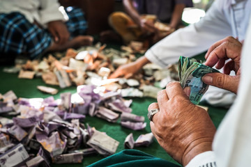
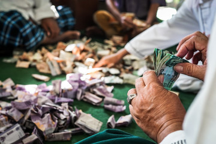

Key Takeaway
Zakat is a religious obligation, ordering all Muslims who meet the necessary criteria to donate a certain portion of wealth each year to charitable causes.
Key Takeaway
Zakat is said to purify yearly earnings that are over and above what is required to provide the essential needs of a person or family.
 
